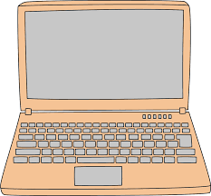

LAPTOP
Laptop berasal dari kata lap yang artinya pangkuan, dan top artinya atas. Jadi, secara sederhana pengertian laptop adalah komputer kecil yang bisa digunakan diatas pangkuan. Bentuk laptop kecil, ringan, flexible dan dapat dibawa kemana-mana. Ia terdiri dari beberapa komponen yang mencakup casing, perangkat input output (keyboard, monitor, touchpad dll), motherboard, baterai dan juga perangkat lunak berupa sistem operasi dan aplikasi-aplikasi. Berbeda dengan komputer dekstop, laptop dilengkapi baterai yang memungkinkan ia tetap beroperasi meskipun tidak terhubung langsung ke sumber listrik.
Daftar isi
Sejarah Laptop

Sejarah laptop awalnya ditandai dari kemunculan IBM Portable PC 5100 pada tahun 1975. Ini adalah komputer mikro pertama yang dibuat khusus untuk kebutuhan matematika dan engineering. Setelah itu, bermunculan produk yang memiliki fitur yang lebih lengkap seperti Rockwell AIM 5, IBM Portable PC 5110, hingga Heathkit H9. Pada tahun 1981, Osborne Computer Corporation berhasil membuat perangkat yang dinamai Osborne 1. Meskipun masih mempunyai banyak kekurangan, perangkat ini dapat disebut sebagai komputer portabel yang pertama. Di awal kemunculannya, Osborne 1 memiliki berat mencapai 24 kilogram dan dirancang secara khusus agar dapat muat di bawah kursi penumpang pesawat. Osborne 1 merupakan microcomputer yang memulai sejarah laptop. Ukuran laptop ini hanya sebesar 5 inci dan juga keyboard yang menempel langsung ke monitor. Laptop pertama kali diproduksi secara massal dengan harga laptop mencapai USD 1,795 atau sekitar 16 juta rupiah. Harga yang cukup mahal, sehingga tidak semua orang bisa memilikinya. Pada saat yang sama, IBM menjual komponen PC secara terpisah, sehingga orang lebih tertarik dengan Osborne 1 yang portabel dan bisa langsung digunakan. Namun reputasi perusahaan Osborne mengalasi penurunan di awal tahun 1983, ketika ia menyatakan kebohongan, jika telah memiliki dua desain komputer canggih yang siap dipasarkan.
Kenyataannya adalah hal tersebut hanya cara agar perusahaannya mendapat konsumen lebih banyak. Hal ini membuat penjualan Osborne 1 mengalami penurunan drastis. Sejarah laptop inilah yang menjadi tulang punggung pendapatan perusahaan Osborne. Tepat pada tanggal 13 September 1983, Osborne Computer Corporation pun dinyatakan bangkrut dan penjualan Osborne 1 terhenti sejak itu. Namun, hal ini ternyata menciptakan tren baru di dunia komputer, karena produsen lain akhirnya mengikuti jejak Osborne untuk mengeluarkan seri laptopnya sendiri. Sejarah laptop pun terus berlanjut. Pada akhirnya, melalui perkembangannya, laptop saat ini sudah banyak memberikan keuntungan bagi penggunanya. Hal ini karena kegunaannya yang mudah, cepat dan praktis. Bentuknya pun saat ini sudah beragam, dengan desain yang menarik dan hampir semua laptop yang beredar saat ini sudah ringan dan minimalis. Fitur yang ditawarkan juga begitu menarik perhatian, bahkan beberapa laptop sudah tersedia fitur touch screen, serta perangkat software dan hardware yang lebih baik dari masa awal kehadirannya. Ke depannya masa depan akan lebih menawarkan fitur yang lebih canggih, karena ilmu di bidang teknologi saat ini sangat berkembang pesat dan para ilmuwan terus mengembangkannya.
Fungsi Laptop
- Mengetik dan Membuat Presentasi
Dulu, mengetik dilakukan dengan mesin ketik yang penggunaannya sulit. Kesalahan pengetikan sekali saja berarti harus mengganti kertas dan memulai dari awal. Kini itu bukan masalah, sejak komputer dan kemudian laptop hadir. Dengan aplikasi pengolah kata, pengguna dapat bebas mengetik tanpa takut kesalahan. Tersedia pula fitur formatting text yang akan membantu proses pengeditan. Selain pengetikan, laptop juga bisa dipakai untuk membuat presentasi. Salah satu perangkat lunak yang menyediakan fitur ini bernama Microsoft Power Point. Berbagai fitur menarik membuat presentasi lebih informatif. - Media Hiburan
Ketika Anda sedang lelah atau jenuh, laptop menjadi media hiburan. Mendengarkan Murottal, menonton film, maupun bermain game dapat dilakukan di laptop. Memang aktivitas tersebut dapat dilakukan di ponsel pintar. Tapi, menonton film di laptop akan memberikan kesan lebih memuaskan. Selain itu, beberapa game juga akan lebih menyenangkan jika dimainkan di laptop. - Desain, Editing Foto dan Video
Dengan bantuan aplikasi desain dan editing, Anda dapat membuat desain poster, pamflet, maupun desain lainnya. Selain itu, Anda dapat pula melakukan editing pada foto maupun video.Anda dapat memanfaatkan aplikasi seperti After Effect, Adobe Ilustrator, Photoshop, maupun Corel Draw. Bahkan, untuk editing video dengan sederhana, Anda dapat menggunakan Movie Maker. - Sebagai Media Penyimpanan Data
Anda dapat menyimpan data di laptop, mulai dari dokumen, foto, video, maupun format file lainnya. Besarnya data yang dapat disimpan akan bergantung pada besarnya storage yang ada pada laptop yang dimiliki. - Sebagai Alat Komunikasi
Laptop juga bisa digunakan sebagai sarana berkomunikasi. Aplikasi smartphone seperti WhatsApp dapat pula Anda buka di laptop via WA WEB. Selain itu, Anda juga dapat menginstal Skype untuk berkomunikasi jarak jauh
Processor Laptop
Jenis - Jenis Processor
- Intel
Intel merupakan jenis prosesor yang paling populer dan mendominasi di pasaran saat ini. Intel dikenal sebagai prosesor yang tahan panas dan memiliki grafis multimedia yang apik. Sebagian prosesor Intel juga dilengkapi dengan teknologi Hyper Threading untuk mempertajam gambar, sehingga cocok bagi Anda yang merupakan seorang pekerja kreatif. - Advanced Micro Devices (AMD)
AMD adalah pesaing berat dari Intel. Prosesor AMD memiliki grafis yang sangat bagus untuk bermain game. Tidak heran jika prosesor AMD lebih banyak disukai oleh gamers. Namun, prosesor AMD ini juga dikenal sebagai prosesor yang cepat panas dan boros daya. - Transmeta
Prosesor Transmeta memiliki keunggulan tahan panas saat digunakan dalam waktu yang lama. Selain itu, Transmeta dikenal memiliki daya konsumsi listrik yang rendah daripada jenis prosesor lainnya. Sayang sekali, prosesor Transmeta saat ini sudah tidak dikembangkan lagi. - Prosesor Apple
Prosesor Apple dikenal memiliki performa yang ngebut meskipun ukuran RAM yang digunakan kecil. Beberapa jenis prosesor keluaran Apple Inc. diantaranya adalah Apple DOS, Macintosh, Apple I dan Apple II. - Cyrix
Cyrix adalah jenis prosesor yang bisa menyaingi Intel dan AMD lantaran memiliki kecepatan pemrosesan data mumpuni. Meskipun begitu, prosesor Cyrix masih kalah populer daripada Intel dan AMD.
Perbedaan Processor Intel dan AMD
| Perbedaan | Intel | AMD | Alasan |
|---|---|---|---|
| Kecepatan Performa | Lebih unggul | Kurang unggul | Telah dibuktikan melalui uji benchmark pada laptop yang menggunakan dua processor Intel dan AMD. Hasil dari uji tersebut Intel lebih unggul dibandingkan AMD. |
| Brand Power (Kekuatan Merek) | Lebih Unggul | Kurang Unggul | Karena Intel adalah produsen yang sudah lebih dahulu memproduksi prosesor dan juga karena Intel sudah mulai merambah ke berbagai lini perangkat selain laptop dan komputer, seperti smartwatch dan smartphone. |
| Kualitas Grafis | Kurang Unggul | Lebih Unggul | Karena Kualitas grafis pada AMD saat bermain game dapat menghasilkan gambar yang lebih apik dan halus. Selain itu, laptop dengan prosesor AMD tetap dapat menjalankan game dengan stabil meski berada dalam kondisi suhu perangkat yang panas. |
| Sistem Perlindungan Terhadap Virus | Kurang Unggul | Lebih Unggul | Karena Prosesor AMD memiliki fitur bernama EVP (Enhanced Virus Protection) yang berfungsi untuk mendeteksi virus atau malware pada laptop Anda. Jika terdapat virus pada suatu program aplikasi atau file, maka prosesor AMD ini tidak akan memprosesnya saat Anda ingin membukanya. |
Rekomendasi Laptop
Laptop ImpianMu
Penjelasan laptop diatas memberikan kita pengetahuan mengenai laptop. Laptop yang merupakan alat yang biasa kita gunakan untuk menyelesaikan pekerjaan sehari-hari seperti mengerjakan tugas kuliah, tugas sekolah, dan sebagainya. Pasti diantara kita memiliki laptop impian yang ingin di beli.
Dari berbagai macam merk dan jenis laptop manakah yang merupakan Laptop ImpianMu ?